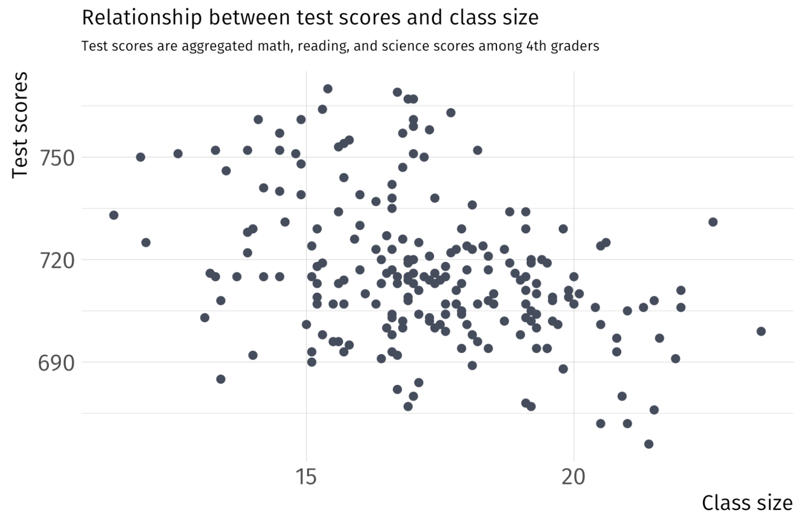
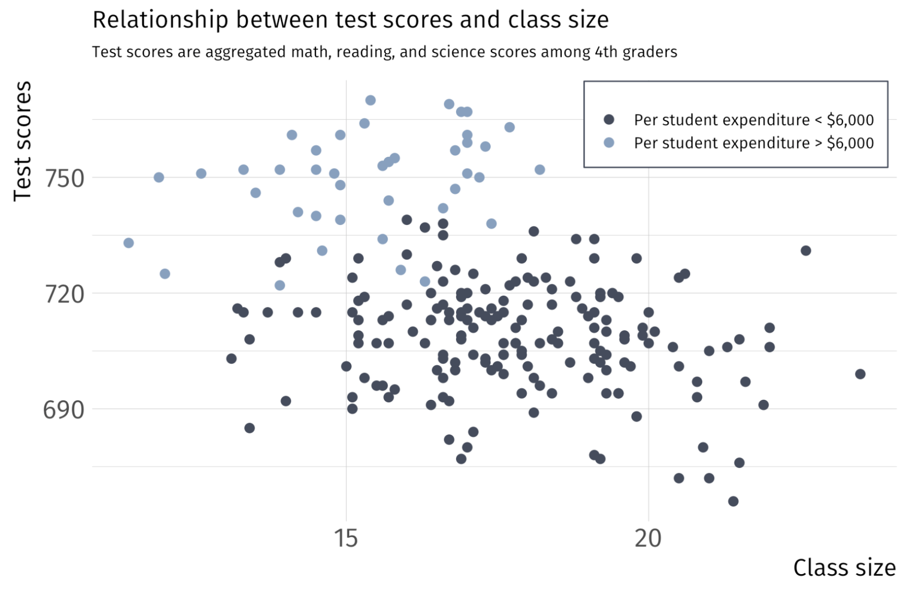
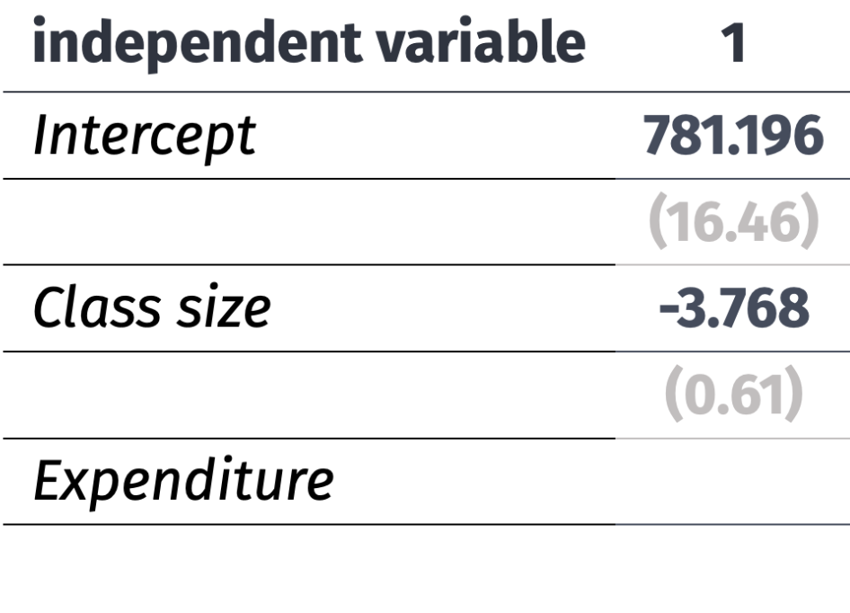
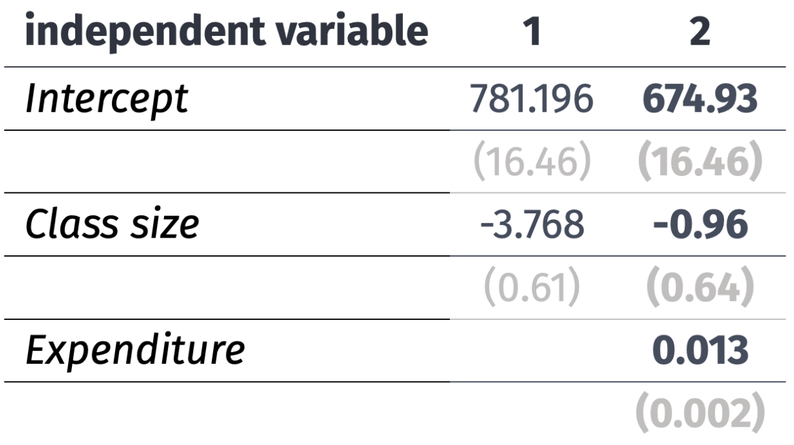
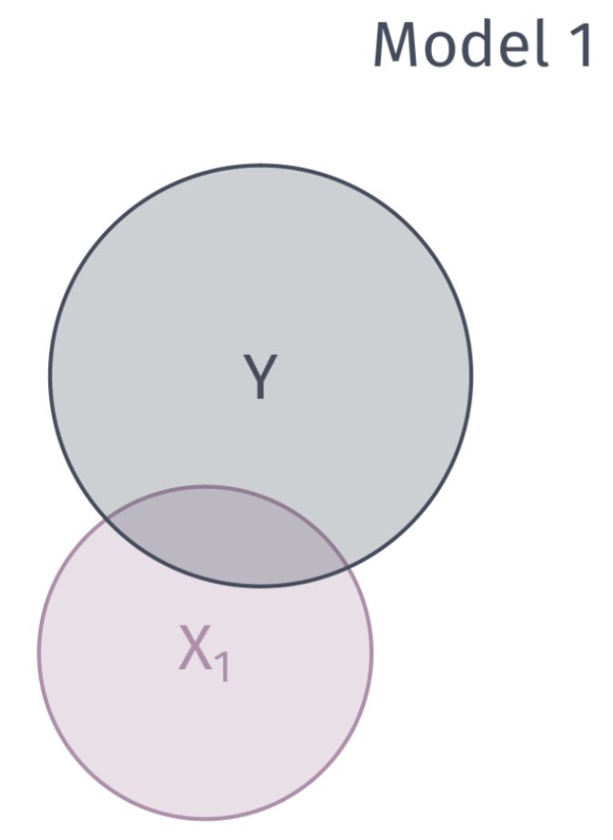
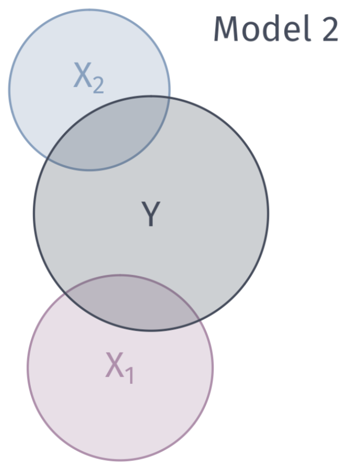
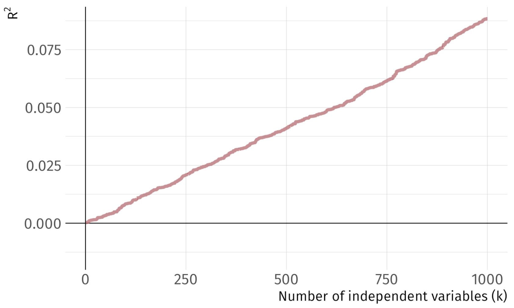
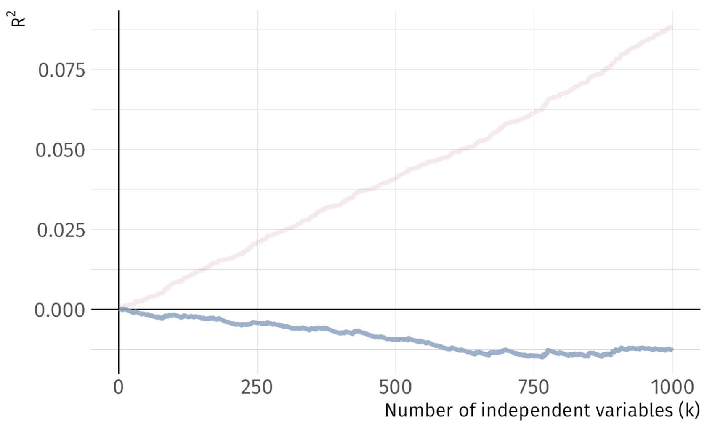

Multiple linear regression
Simple linear regression features one dependent variable and one independent variable:
\[ \color{#434C5E}{Y_i} = \beta_0 + \beta_1 \color{"#81A1C1"}{X_i} + u_i \]
Multiple linear regression features one dependent variable and multiple independent variables:
\[ \color{#434C5E}{Y_i} = \beta_0 + \beta_1 \color{"#81A1C1"}{X_{1i}} + \beta_2 \color{"#81A1C1"}{X_{2i}} + \cdots + \beta_{k} \color{"#81A1C1"}{X_{ki}} + u_i \]
. . .
This serves more than one purpose. Multiple independent variables improves predictions, avoids OVB, and better explains variation in \(Y\).
Simple Linear Regression

Add Dimension \(\rightarrow\) Per Student Expenditure

Multiple Linear Regression Ex.
If we ignore per student expenditure (aka our original simple regression)
\[ \text{Scores}_i = \beta_0 + \beta_1 \text{Class Size}_i + u_i \]

Multiple Linear Regression Ex.
Controlling for school funding
\[ \text{Scores}_i = \beta_0 + \beta_1 \text{Class Size}_i + \text{Expenditure}_i+ u_i \]

OLS Estimation
Residuals are now defined as:
. . .
\[ \hat{u}_i = Y_i - \hat{\beta}_0 - \hat{\beta}_1 X_{1i} - \hat{\beta}_2 X_{2i} - \cdots - \hat{\beta}_{k} X_{ki} \]
. . .
As with SLR, OLS minimizes the sum of squared residuals (RSS).
. . .
\[ \begin{align*} \color{#D08770}{RSS} &= \sum_{i = 1}^{n} (Y_i - \hat{\beta}_0 - \hat{\beta}_1 X_{1i} - \hat{\beta}_2 X_{2i} - \cdots - \hat{\beta}_{k} X_{ki})^2 \\ &= \color{#D08770}{\sum_{i=1}^n \hat{u}_i^2} \end{align*} \]
which is a familiar expression.
OLS Estimation
To obtain point estimates:
\[ \min_{\hat{\beta}_0,\, \hat{\beta}_1,\, \dots \, \hat{\beta}_k} \quad \color{#D08770}{\sum_{i=1}^n \hat{u}_i^2} \]
- Take partial derivatives of RSS with respect to each \(\hat{\beta}\)
- Set each derivative equal to zero
- Solve the system of \(k+1\) equations1.
. . .
The algebra is cumbersome. We let R do the heavy lifting.
Coefficient Interpretation
Model
\[ \color{}{Y_i} = \beta_0 + \beta_1 \color{}{X_{1i}} + \beta_2 \color{}{X_{2i}} + \cdots + \beta_{k} \color{}{X_{ki}} + u_i \]
Interpretation
- The intercept \(\hat{\beta}_0\) is the average value of \(Y_i\) when all of the independent variables are equal to zero.
- Slope parameters \(\hat{\beta}_1, \dots, \hat{\beta}_{k}\) give us the change in \(Y_i\) from a one-unit change in \(X_j\), holding the other \(X\) variables constant.
Algebraic properties of OLS
The OLS first-order conditions yield the same properties as before.
1. Residuals sum to zero: \(\sum_{i=1}^n \hat{u_i} = 0\).
2. The sample covariance \(X_i\) and the \(\hat{u_i}\) is zero.
3. The point \((\bar{X_1}, \bar{X_2}, \dots, \bar{X_k}, \bar{Y})\) is on the fitted regression “line.”
Goodness of fit
Fitted values are defined similarly:
\[ \hat{Y_i} = \hat{\beta}_0 + \hat{\beta}_1 X_{1i} + \hat{\beta}_2 X_{2i} + \cdots + \hat{\beta}_{k} X_{ki} \]
The formula for \(R^2\) is the same as before:
\[ R^2 =\frac{\sum(\hat{Y_i}-\bar{Y})^2}{\sum(Y_i-\bar{Y})^2} \]
Goodness of fit
We can describe the variation explain in \(Y\) with venn diagrams

Goodness of fit
We can describe the variation explain in \(Y\) with venn diagrams

As we add more variables, we are able to explain more “chunks” of the variation in \(y\)
Problem: As we add variables to our model, \(R^2\) mechanically increases.
Let me show you this problem with a simulation
Simulate a dataset of 10,000 observations on \(y\) and 1,000 random \(x_k\) variables, where
\[ y \perp x_k \quad \forall x_k \; \text{s.t.} \; k = 1, 2, \dots, 1000 \]
We have 1,000 independent variables that are independent to the dependent variable. Each \(x_k\) has no relationship to \(y\) whatsoever.
Problem: As we add variables to our model, \(\color{#314f4f}{R^2}\) mechanically increases.
Pseudo-code:
Generate 10,000 obs. on \(y\)
Generate 10,000 obs. on variables \(x_1\) through \(x_{1000}\)
Regressions:
- LM1: Regress \(y\) of \(x_1\); record \(R^2\)
- LM2: Regress \(y\) of \(x_1\) and \(x_2\); record \(R^2\)
- …
- LM1000: Regress \(y\) on \(x_1\), \(x_2\), …, \(x_{1000}\); record \(R^2\)
Problem: As we add variables to our model, \(R^2\) mechanically increases.

Problem: As we add variables to our model, \(R^2\) mechanically increases.
One solution: Penalize for the number of variables, e.g., adjusted \(R^2\):

Goodness of fit
Problem: As we add variables to our model, \(R^2\) mechanically increases.
One solution: Penalize for the number of variables, e.g., adjusted \(R^2\):
\[ \bar{R}^2 = 1 - \dfrac{\sum_i \left( Y_i - \hat{Y}_i \right)^2/(n-k-1)}{\sum_i \left( Y_i - \bar{Y} \right)^2/(n-1)} \]
Note: Adjusted \(R^2\) need not be between 0 and 1.
Multiple regression
There are tradeoffs to remember as we add/remove variables:
Fewer variables
- Explains less variation in \(y\)
- Provide simple interpretations and visualizations
- More worried about omitted-variable bias
More variables
- More likely to find spurious relationships2
- More difficult interpretation
- The variance of our point estimates will be bigger
- We still might have omitted-variable bias
Multiple regression
There are tradeoffs to remember as we add/remove variables:
Fewer variables
- Explains less variation in \(y\)
- Provide simple interpretations and visualizations
- More worried about omitted-variable bias
More variables
- More likely to find spurious relationships3
- More difficult interpretation
- The variance of our point estimates will be bigger
- We still might have omitted-variable bias